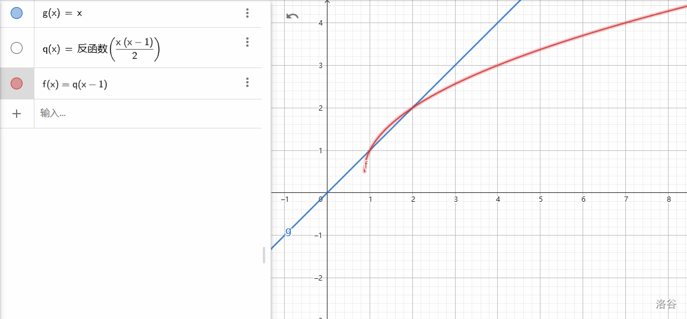

题意
题面已经说的很清楚了 qwq。
思路
因为构造序列所需的要求是对若干个数对判断条件，而改变数的顺序是不会影响数对的判断的，所以数列排序可以随意变换。
当 k=0 时，很明显的做法就是直接输出 n 到 2n−1 的序列，这样子的话，因为没有重复，所有 ai 都不会有 1 倍 ai 的贡献，同时，2 倍 ai 的贡献是从 2n 到 4n−2，序列中的值域到不了，所以没有贡献。
进一步，可以发现若所有的 ai≥n，将只会产生 1 倍 ai 的贡献，即只会产生相等的贡献。
这个规则将用于以下构造。
考虑接下来的 k≤n−1。
有一种想法就是可以先将数列设成 n 到 2n−1 的递增排列，如果将一个数 ai 修改成其它原有的数 x，它就会产生“修改前 x 的个数”的贡献。
比如下面的序列：
如果将第二个的 8 改为 7，它会产生 1 的贡献。
再如，如果继续将 9 改为 7，它会产生 2 的贡献。
容易发现，这样修改下去，第 i 次修改所产生的贡献就是 i。
然后，如果总共按照这种方式修改 m 次，它所产生的贡献是 2m×(m+1)。
这样做虽然确实不错，但带来了一个严重的问题，有些个数的贡献是表示不到的，那么如何表示这些次数？
下面有个例子：
现在已产生的贡献是 3，如何将其抬到 4？
我们可以 10 和 11 改成两个 10，这样子的话，两个 10 会一共产生 1 的贡献。
所以说，我们有一种做法如下：
-
若需求贡献次数为 k，我们需要在前 m 位将尽量多的贡献次数完成，即需要最大的 m，满足 2m×(m+1)≤k，可以证明，这样的前 m 位所产生的贡献是极大（最多）的。（修改后的数全部大于等于 n 的情况下）
-
如果在上一个操作中有若干贡献未完成，可以从 m+1 开始，重复第一个操作，直到贡献全部实现。
到了接下来的 k≤2n(n−1)。
我们考虑另一种构造方式，因为如果全部按照上面，会有一些情况，n “太短”。
比如：7 8 9 10 11 12 13，如果要贡献 12 次，那就没办法了。
这时候，有一种方式。比如，如果将以上的第 1 位修改成 1，将会产生 n−1 的贡献（因为任意数都是 1 的倍数），若继续将第 2 位修改成 1，将会产生 n−2 的贡献——若继续将第 i 位修改成 1，将会产生 n−i 的贡献。
这就好办了。还是上面的例子，只要我修改次数 ≥6 次，不管如何，我先在第 1 位怼个 1，6 个贡献就搞定了。再在第 2 位怼个 1，5 个贡献就搞定了，接下来只需要从第 3 位开始重复前面的操作就可以了。
所以最终操作方法如下：
-
如果当前是第 i 位，考虑能否将这一位替换成 1，产生 n−i 的贡献，并重复这一条，考虑下一位。
-
使用第一个方法完成上一条完不成的。
针对 n<2 的情况进行了特判。
代码：
1
2
3
4
5
6
7
8
9
10
11
12
13
14
15
16
17
18
19
20
21
22
23
24
25
26
27
28
29
30
31
32
33
34
35
36
37
38
39
40
41
42
43
44
45
46
47
48
49
50
| #include<bits/stdc++.h>
using namespace std;
typedef long long ll;
const int maxn=5e5+5;
ll n,k;
ll sum=0,i;
void solve(ll nowpos,ll nowk,ll st){
if(nowk==0){
ll j=0;
for(int i=nowpos;i<=n;++i){
printf("%lld ",st+j);
++j;
}
return;
}
ll ssum=0;
for(i=1;i<=n;++i){
ssum+=i;
if(nowk<ssum) break;
printf("%lld ",st);
++nowpos;
}
printf("%lld ",st);
++nowpos;
solve(nowpos,nowk-(ssum-i),st+1);
}
int main(){
scanf("%lld%lld",&n,&k);
if(n==1) printf("1");
else{
for(i=n-1;i>=2;--i){
sum+=i;
if(k<sum) break;
printf("1 ");
}
if(i<2){
if(k-sum==0) printf("%lld %lld ",2*n-2,2*n-1);
else printf("%lld %lld",2*n-1,2*n-1);
}
else solve(n-i,k-(sum-i),2*n-1-i);
}
return 0;
}
|
证明

对于长度 x>1 的序列，可以至少通过第一种方式完成 x−1 次贡献（你管那一小点凸出来的干什么又取不到非整数)。
能用吗能用吗 awa。